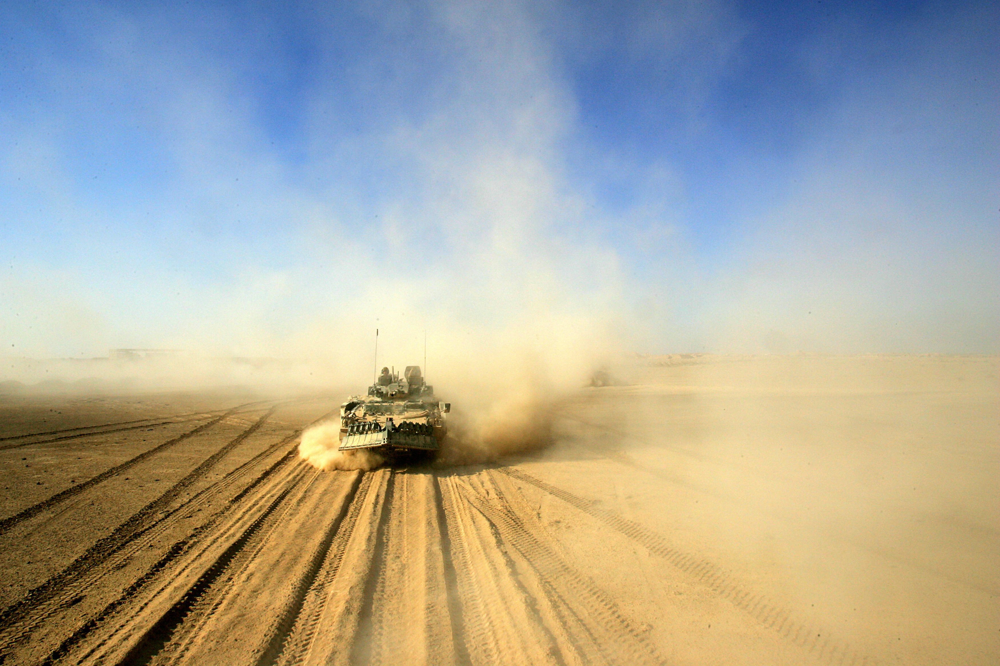

Gulf War
The Gulf War started in August 1990 and ended in February 1991. The combat phase was called Operation Desert Storm and was only 5 weeks. The Iraqi army invaded and occupied Kuwait this started sanctions from the UN on Iraq. The USA, Kuwait, Saudi Arabia and other nations assembled one of the largest alliances since WWII to get rid of the Iraqi Army in Kuwait. As soon as the ground troops hit the ground there was a ceasefire from Iraqi coalition 100 hours after.
{kind=link}
Operation Enduring Freedom
On September 11, 2001 the United States of America was attacked by multiple suicide bombings. Members of Al-Qaeda, hijacked multiple planes and subsequently crashed them into the Twin Towers, Pentagon and another into a field(Flight 93). Al-Qaeda, an extremist Islamic militant group, was responsible for these acts of violence. With Osama Bin Laden, as the terrorist group’s leader, was rumored to be hiding in Afghanistan. The United States responded with haste for these acts of terrorism by giving Afghanistan an ultimatum. The Taliban (Sunni Islamic group that ruled Afghanistan) did not comply and on October 7, 2001 Operation Enduring Freedom (OEF) was launched.
{kind=link}
Operation Iraqi Freedom
One March 20, 2003 the USA and Great Britain launched their attack in Iraq. Iraq under Suddam Hussain didn't respond to UN in time so we went looking for the weapons of mass destruction. As well Suddam Hussein had ties to the group called Al-Qaeda which were responsible for the September 11th terrorist attacks. Suddam was removed from power and Iraq had their very first elections, although they weren't done without any troubles. In fact, there were feuds between the Shiite and Sunni Muslims which spread more violence and fuel for the fire.
William Rongholt

{kind=link}
William Rongholt(myself) went into the US Marine Corp in August 10, 2002 and was honorably discharged in October 15, 2009. He went to boot camp and then to Infantry school and returned home (Eau Claire, Wisconsin) in January 2003. He then was assigned to Golf Company 2/24 that was based in Madison, WI. In 2004 2/24 was activated to Iraq after a three-month training in California which William was assigned to a team called PSD which was going to be the battalion commander's personal security detachment. They were sent to Mahmoudiyah, Iraq and the battalion was split up into four areas; Mahmoudiyah, Yusufiyah, Latifiyah and a post on MSR Tampa. William was based in their main base in Mahmoudiyah, the whole area was susceptible to mortar attacks, rpg's and IED's (improvised explosive devices). The battalion lost 9 Marines during that activation. The second activation came two years after they got back home in 2007 to 2008. This activation was very uneventful which was good but it was slow and a lot of walking. Golf Co. had their own base outside of Fallujah, Iraq. After this that was it for William Rongholt he got out in 2009 and started living his life outside of the military.
References
Multiple. (2016, October 15). Wikipedia. Retrieved from Iraq War:https://en.wikipedia.org/wiki/Iraq_War